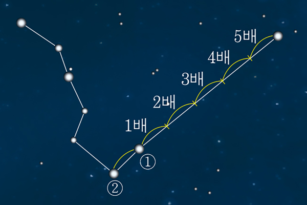

1번
다음은 별자리를 이용하여 방위를 찾기 위한 방법을 순서 없이 나타낸 것입니다. 순서대로 바르게 기호를 나열한 것은?

ㄱ
국자 모양 끝부분에 있는 두 별 ①과 ②를 찾는다.
ㄴ
밤하늘에서 국자 모양으로 보이는 북두칠성을 찾는다.
ㄷ
북극성을 바라보면 북쪽이므로 나머지 방위를 찾는다.
ㄹ
두 별 사이의 거리의 다섯 배만큼 떨어진 곳에서 북극성을 찾는다.